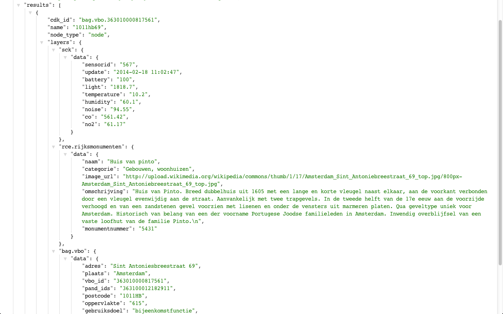
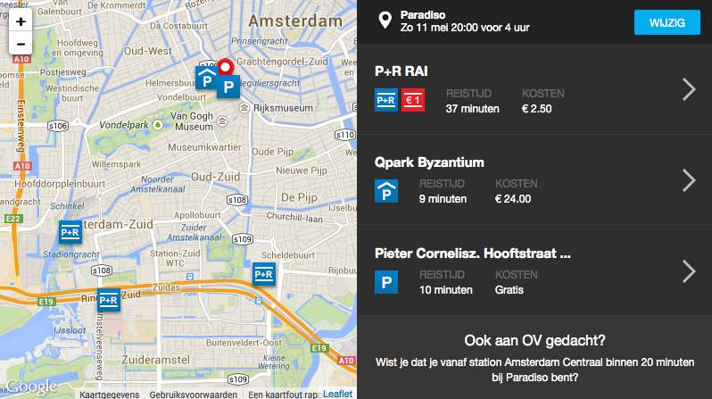

CitySDK:
tons of data
dozens of cities
one Service Development Kit
CitySDK
●
City Service Development Kit
Interoperability (1)

Interoperability (2)

Data portal

Different silos
● not linked

Different file formats
404 - not found

Different data models & field names

Different data models & field names

Amsterdam Central Station

Wikipedia

DBpedia

OpenStreetMap

Cultural Heritage Site
GVB
Data comes from different sources, in different formats
Code does not scale between cities

School

Stakeholders
Where are schools in my neighbourhood? ●
Which school is the best? ●
How can I get there safest?

Silos
Data available, but difficult to answers questions
CitySDK
Uniform APIs for cities
23 partners
8 countries
8 cities
Generic APIs using existing backends and data
Developer engagement, hackathons, replication pilots

CitySDK cities

Interoperability (3)
Three domains
1. Participation
How can I tell my city the street lights are broken?

Open311 apps
Open311
Broken street light
2. Tourism
What can I do tonight? And where?

Tourism apps

Tourism apps
3. Mobility
Does my train leave on time? And where can I park my bike?
CitySDK Linked Data API

Concept (1)
Concept (2)
Concept (3)
URI for each object
API for a read/write city
Data in 6 CitySDK cities (sel.)
Amsterdam, Netherlands, Helsinki, Istanbul, Lamia (GR), Manchester, Rome (prov.)
| |
A |
N |
H |
I |
L |
M |
R |
| OpenStreetMap |
● |
● |
● |
● |
● |
● |
● |
| Public Transport |
● |
● |
● |
● |
● |
● |
● |
| Admin. Regions |
● |
● |
● |
● |
● |
● |
● |
| POI/events |
● |
● |
|
● |
|
● |
● |
| Parking (rt) |
● |
|
|
● |
● |
|
● |
| Electr. charg. |
● |
● |
|
|
|
|
● |
| Weather |
● |
● |
|
|
|
● |
|
| Real-time traffic |
● |
● |
|
● |
|
|
|
| Population stat. |
● |
● |
|
|
|
|
|
| Cadastre |
● |
● |
● |
|
|
|
|

Public transport stops in the Netherlands
JSON, RDF/Turtle
Soon: GeoJSON, JSON-LD

SmartCitizenKit

SCK - Website
SCK - CitySDK LD API

Haarlem

Buildings ScreenCap

City Dashboard
City Navigator
Parking widget 1

Parking widget 2

OpenTripPlannerAnalyst
What's next?
Cities, developers, citizens:
Join us!